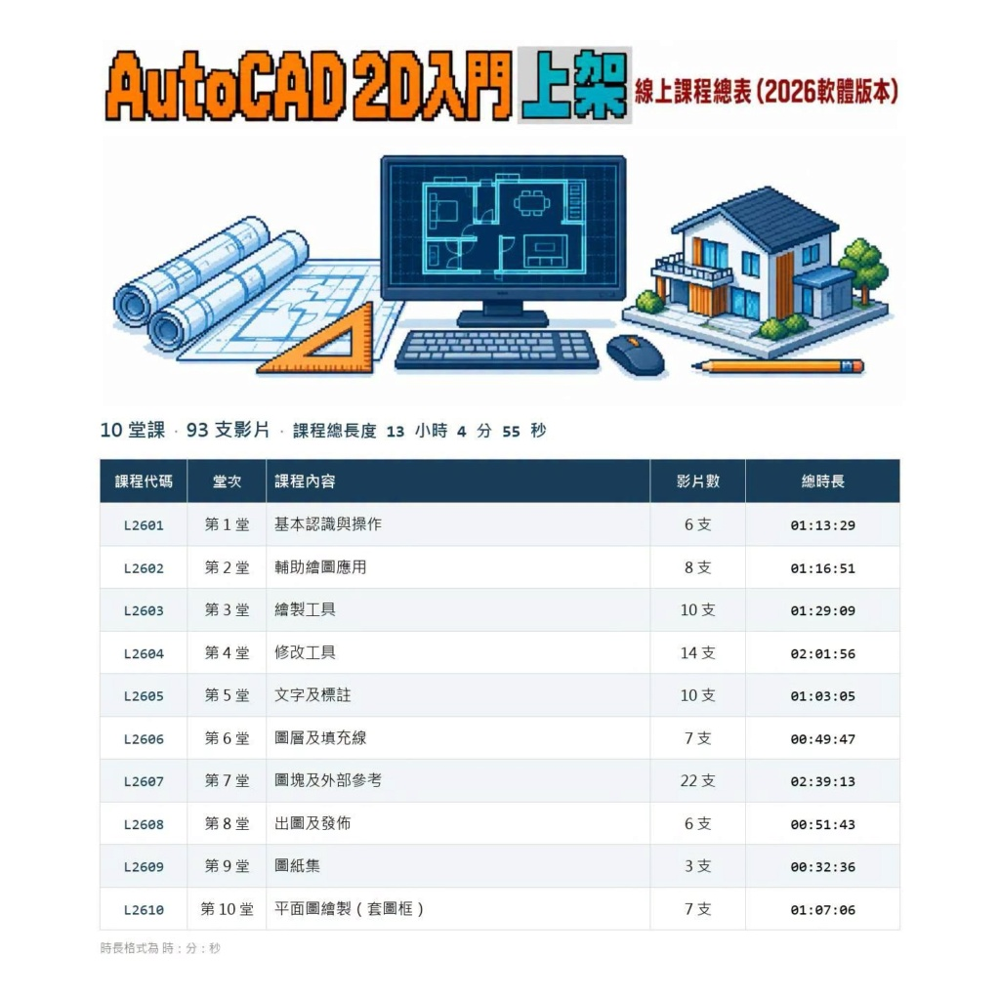
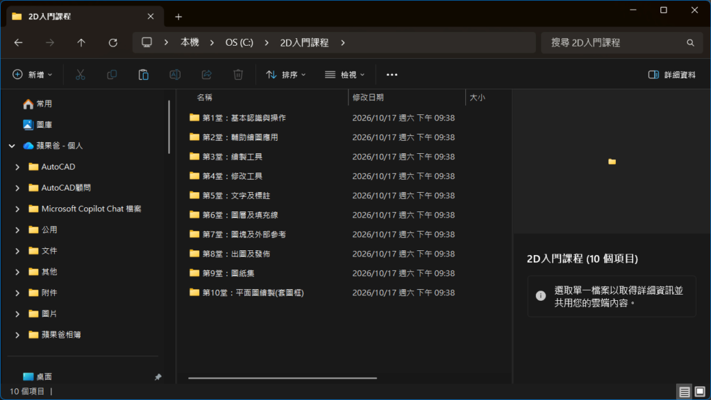
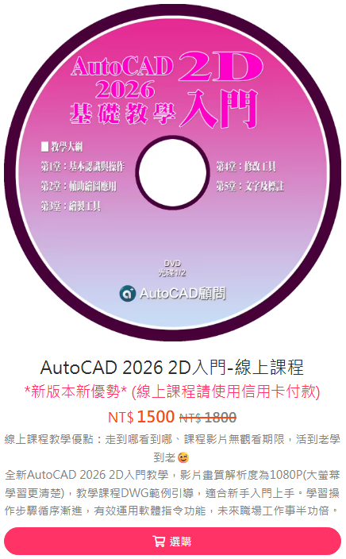

介紹：全新AutoCAD 2026 2D入門教學，教學課程DWG範例引導，適合新手入門上手。學習操作步驟循序漸進，有效運用軟體指令功能，未來職場工作事半功倍。
作者：Tiger&蘋果爸
版本：AutoCAD 2026
光碟：中文影音教學 (線上課程_已上架)
規格：共計有10堂課(約780分鐘)，附有DWG範例供操作練習，還有相關教學文件筆記。
畫質：影片解析度為1080P，請使用1920x1080解析度以上電腦設備播放。全螢幕影片撥放方式(Alt鍵+Enter鍵)。
售價：NT1800元 即刻優惠 NT1500元 (線上課程_已上架)
出版日期：2026年10月中旬

[/color]
🎀 蘋果爸教學課程訂購中 🎀
👉 (點我選購線上課程) 👈
論壇信箱: kv1012tiger.kc@gmail.com
2D入門線上課程：優惠1500元(原價1800元)，即刻開課影片觀看無期限
教授軟體為AutoCAD 2026版本，使用 AutoCAD 2009 至 AutoCAD 2027 版本均可！
因為課程教授的基礎觀念及步驟作法都是通用的，這一點請大家放心，有學習疑慮隨時上論壇或社團提問。
光碟內含、「DWG範例」及「筆記重點整理」。

第1堂：基本認識與操作
範例1.檔案類型（DWG、DWT、BAK、SV$及備份救回）
範例2.版本類型（版本差異與圖檔相容性）
範例3.基本操作（檢視圖面細節、物件選取、快速選取）
補充內容：操作介面、環境選項、指令輸入、滑鼠與鍵盤操作、資料夾檔案分類。
第2堂：輔助繪圖應用
範例1.正交與極座標
範例2.物件鎖點與物件鎖點追蹤
範例3.使用者座標系統（UCS）
範例4.查詢工具運用（座標、距離、面積及物件性質）
補充內容：鎖點與格線、動態輸入、直角座標與極座標、直接距離輸入及鎖定角度。
第3堂：繪製工具
1.線_LINE及接合_JOIN
2.聚合線_PLINE及聚合線編輯_PEDIT
3.建構線_XLINE
4.圓_CIRCLE
5.矩形_RECTANG
6.多邊形_POLYGON
7.弧_ARC
8.橢圓_ELLIPSE
9.等分_DIVIDE
10.等距_MEASURE
第4堂：修改工具
1.修剪_TRIM及延伸_EXTEND
2.圓角_FILLET及倒角_CHAMFER
3.複製_COPY及移動_MOVE
4.分解_EXPLODE
5.偏移複製_OFFSET
6.鏡射_MIRROR
7.陣列_ARRAY（矩形陣列、環形陣列）
8.旋轉_ROTATE
9.比例_SCALE
10.拉伸_STRETCH
第5堂：文字及標註
1.文字：單行文字_TEXT、多行文字_MTEXT、文字型式_STYLE、尋找及取代_FIND、大字體與SHX字體檔問題。
2.標註：常用標註指令、標註型式_DIMSTYLE、基線式與連續式標註、快速引線_QLEADER、快速標註_QDIM、標註編輯_DIMEDIT及間距調整_DIMSPACE。
第6堂：圖層及填充線
1.圖層_LAYER（圖層建立、狀態、顏色、線型、線寬及可見性）
2.線型管理員_LINETYPE
3.清除未使用的圖層_PURGE
4.填充線_HATCH（樣式、角度與比例、填充線編輯_HATCHEDIT、邊界調整及面積計算）
第7堂：圖塊及外部參考
1.圖塊：圖塊原理、建立_BLOCK、插入_INSERT、外部圖塊製作_WBLOCK、圖塊編輯_BEDIT及屬性定義_ATTDEF。
2.外部參考_XREF：插入與管理、貼附與覆疊、路徑設定、現地編輯_REFEDIT及截取_XCLIP。
第8堂：出圖及發佈
1.模型空間出圖_MSPACE：圖面單位與比例、A3圖框、出圖_PLOT、繪圖機管理員及出圖型式表。
2.配置空間出圖_PSPACE：A1圖框、視埠建立與比例、視埠鎖護、圖層可見性及頁面設定。
3.發佈_PUBLISH應用：頁面設置_PAGESETUP、有／無頁面設置的圖面發佈、模型與配置批次出圖、多圖紙及獨立PDF輸出。
第9堂：圖紙集
1.圖紙集說明：圖紙列示、視景列示、資源圖面與圖紙順序管理。
2.建立圖紙集_SHEETSET：既有圖面匯入、子集組織及圖紙集出版。
3.電子傳送_ETRANSMIT：傳送設定、圖面與從屬檔案封存、併入外部參考及附加檔案。
第10堂：平面圖繪製(套圖框)
1.教室平面（範本、繪圖範例及A3外部參考圖框）
2.家具配置平面（範本、繪圖範例及A3外部參考圖框）
補充文件：A1圖框製作範本、樣版檔設定。
https://www.autocad-tw.com/f72-forum
https://www.autocad-tw.com/t23024-topic
https://www.autocad-tw.com/t22774-topic
